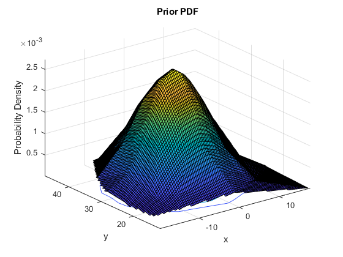
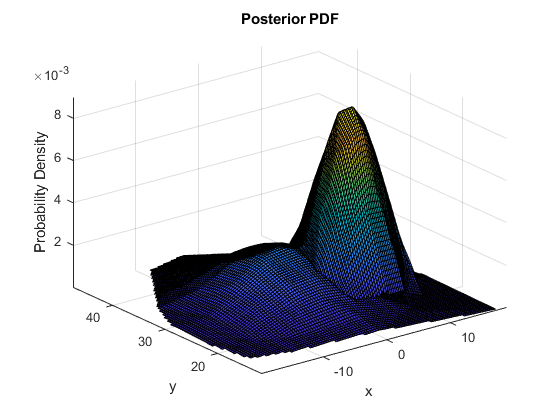
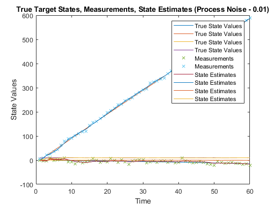
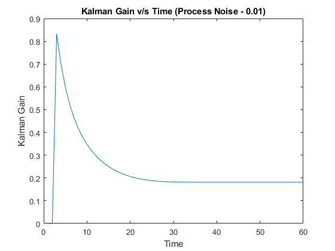
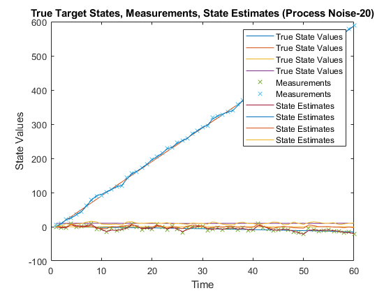
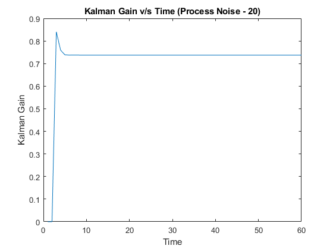

close all
clearvars
T = 1;
time_step = 1
F = [1 0 T 0 ; 0 1 0 T ; 0 0 1 0 ; 0 0 0 1];
proNoise = 0.01;
Q = proNoise*[ ...
(T^3)/3 0 (T^2)/2 0; ...
0 (T^3)/3 0 (T^2)/2; ...
(T^2)/2 0 T 0; ...
0 (T^2)/2 0 T];
sigmaX = 5;
sigmaY = 5;
R = [sigmaX^2 0 ; 0 sigmaY^2];
H = [1 0 0 0; 0 1 0 0];
load('data.mat');
input_data = load('data.mat');
measurements_input_data = input_data.measurements;
target_state_input_data = input_data.targetState;
estimate = zeros(4,60);
gain = zeros(1,60);
for i = 1:60
z = measurements(:,i);
if i == 2
mean = [z(1) z(2) z(1)-measurements(1,i-1) z(2)-measurements(2,i-1)]';
covar = [R(1,1) 0 R(1,1) 0; 0 R(2,2) 0 R(2,2); R(1,1) 0 2*R(1,1) 0; 0 R(2,2) 0 2*R(2,2)];
estimate(:,i) = mean;
elseif i > 2
[priorMean, priorCovar] = kalmanPrediction(mean,covar,F,Q);
if i == 4
X = mvnrnd(priorMean(1:2).',priorCovar(1:2,1:2),100);
Y = mvnpdf(X, priorMean(1:2).',priorCovar(1:2,1:2));
xx = X(:,1); yy = X(:,2); zz = Y;
FF = TriScatteredInterp(xx,yy,zz);
qx = linspace(min(xx),max(xx),100);
qy = linspace(min(yy),max(yy),100);
[qx,qy] = meshgrid(qx,qy);
qz = FF(qx,qy);
figure;
h = surfc(qx,qy,qz);
xlabel('x');
ylabel('y');
zlabel('Probability Density');
title('Prior PDF');
hold on;
end

[mean,covar,gain(:,i)] = kalmanUpdate(priorMean,priorCovar,z,H,R);
if i == 4
disp('Since we are looking at a random parameter estimation problem, we are basically choosing between MAP and MMSE estimators. Both provide good results but since we are using gaussian prior both MAP and MMSe estimators will give the exact same answer. The results will only differ if any other prior is used instead')
X = mvnrnd(mean(1:2).',covar(1:2,1:2),100);
Y = mvnpdf(X, mean(1:2).',covar(1:2,1:2));
xx = X(:,1); yy = X(:,2); zz = Y;
FF = TriScatteredInterp(xx,yy,zz);
qx = linspace(min(xx),max(xx),100);
qy = linspace(min(yy),max(yy),100);
[qx,qy] = meshgrid(qx,qy);
qz = FF(qx,qy);
h = surfc(qx,qy,qz);
xlabel('x');
ylabel('y');
zlabel('Probability Density');
title('Posterior PDF');
end
estimate(:,i) = mean;
Since we are looking at a random parameter estimation problem, we are basically choosing between MAP and MMSE estimators. Both provide good results but since we are using gaussian prior both MAP and MMSe estimators will give the exact same answer. The results will only differ if any other prior is used instead

end
end
time_step =
1
disp('State estimation helps us identify good idea of the sate given the measurements. Which measurements alone would not be sufficent to do so and will be very noisy due to noise, or other sources.')
figure;
plot(target_state_input_data.', 'DisplayName','True State Values');
xlabel('Time');
ylabel('State Values');
title('True Target States, Measurements, State Estimates (Process Noise - 0.01)');
legend();
hold on;
time = 1:60;
scatter(time, measurements_input_data, 'x', 'DisplayName','Measurements');
hold on;
plot(estimate.', 'DisplayName','State Estimates');
disp(estimate(:,60));
disp('The kalman gain weights the measurement innovation (difference between the measurement and the expected value of measurement), and helps compute the posterior mean and covariance. The graph shows the variance of the estimator and the decreasing graph shows us that we are approching better state estimates with each measurement')
figure;
plot(gain.');
xlabel('Time');
ylabel('Kalman Gain');
title('Kalman Gain v/s Time (Process Noise - 0.01)');
T = 1;
F = [1 0 T 0 ; 0 1 0 T ; 0 0 1 0 ; 0 0 0 1];
proNoise = 20;
Q = proNoise*[ ...
(T^3)/3 0 (T^2)/2 0; ...
0 (T^3)/3 0 (T^2)/2; ...
(T^2)/2 0 T 0; ...
0 (T^2)/2 0 T];
sigmaX = 5;
sigmaY = 5;
R = [25 0 ; 0 25];
H = [1 0 0 0; 0 1 0 0];
load('data.mat');
input_data = load('data.mat');
measurements_input_data = input_data.measurements;
target_state_input_data = input_data.targetState;
estimate = zeros(4,60);
gain = zeros(1,60);
for i = 1:60
z = measurements(:,i);
if i == 2
mean = [z(1) z(2) z(1)-measurements(1,i-1) z(2)-measurements(2,i-1)]';
covar = [R(1,1) 0 R(1,1) 0; 0 R(2,2) 0 R(2,2); R(1,1) 0 2*R(1,1) 0; 0 R(2,2) 0 2*R(2,2)];
estimate(:,i) = mean;
elseif i > 2
[priorMean, priorCovar] = kalmanPrediction(mean,covar,F,Q);
[mean,covar,gain(:,i)] = kalmanUpdate(priorMean,priorCovar,z,H,R);
estimate(:,i) = mean;
end
end
figure;
plot(target_state_input_data.', 'DisplayName','True State Values');
xlabel('Time');
ylabel('State Values');
title('True Target States, Measurements, State Estimates (Process Noise-20)' );
legend();
hold on;
time = 1:60;
scatter(time, measurements_input_data, 'x', 'DisplayName','Measurements');
hold on;
plot(estimate.', 'DisplayName','State Estimates');
disp(estimate(:,60))
figure;
plot(gain.');
xlabel('Time');
ylabel('Kalman Gain');
title('Kalman Gain v/s Time (Process Noise - 20)');
disp('The track plot clearly shows that there is more noise in the state estimates when the process noise intensity is more. Also becoause of this, the kalman filter gain is converging to a higher value since the state estimates have inherently more noise, and the Kalman Filter update is unable to reduce it below a certain limit.')
State estimation helps us identify good idea of the sate given the measurements. Which measurements alone would not be sufficent to do so and will be very noisy due to noise, or other sources.
-16.4385
587.6455
-0.5741
10.2068
The kalman gain weights the measurement innovation (difference between the measurement and the expected value of measurement), and helps compute the posterior mean and covariance. The graph shows the variance of the estimator and the decreasing graph shows us that we are approching better state estimates with each measurement
-20.4568
588.0735
-2.6916
10.8939
The track plot clearly shows that there is more noise in the state estimates when the process noise intensity is more. Also becoause of this, the kalman filter gain is converging to a higher value since the state estimates have inherently more noise, and the Kalman Filter update is unable to reduce it below a certain limit.
   